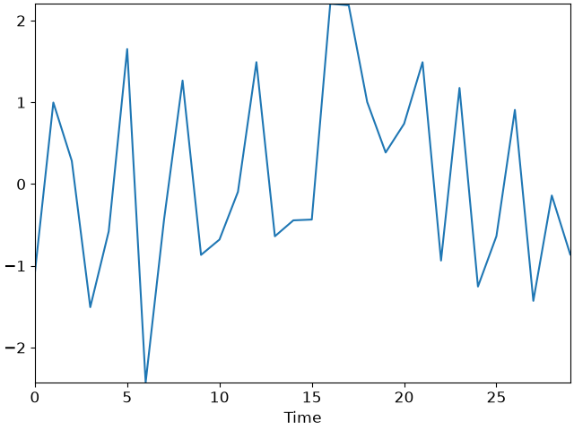
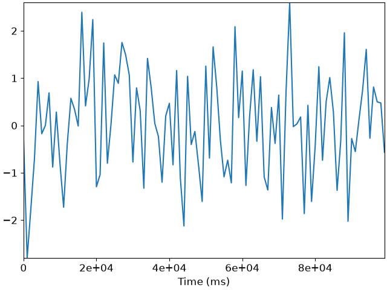
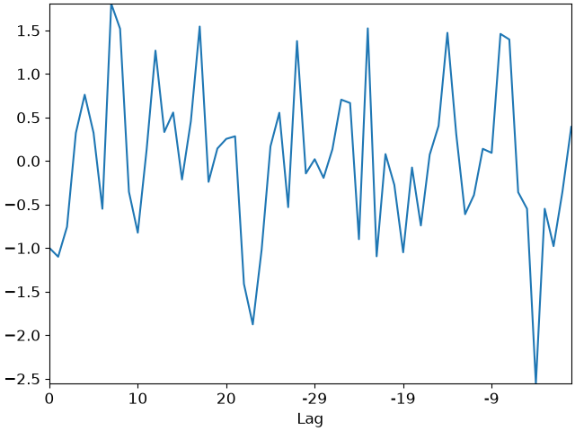

librosa.display.TimeFormatter
- class librosa.display.TimeFormatter(lag=False, unit=None)[source]
A tick formatter for time axes.
Automatically switches between seconds, minutes:seconds, or hours:minutes:seconds.
- Parameters:
- lagbool
If
True, then the time axis is interpreted in lag coordinates. Anything past the midpoint will be converted to negative time.- unitstr or None
Abbreviation of the string representation for axis labels and ticks. List of supported units: * “h”: hour-based format (H:MM:SS) * “m”: minute-based format (M:SS) * “s”: second-based format (S.sss in scientific notation) * “ms”: millisecond-based format (s.µµµ in scientific notation) * None: adaptive to the duration of the underlying time range: similar to “h” above 3600 seconds; to “m” between 60 and 3600 seconds; to “s” between 1 and 60 seconds; and to “ms” below 1 second.
See also
Examples
For normal time
>>> import matplotlib.pyplot as plt >>> times = np.arange(30) >>> values = np.random.randn(len(times)) >>> fig, ax = plt.subplots() >>> ax.plot(times, values) >>> ax.xaxis.set_major_formatter(librosa.display.TimeFormatter()) >>> ax.set(xlabel='Time')
Manually set the physical time unit of the x-axis to milliseconds
>>> times = np.arange(100) >>> values = np.random.randn(len(times)) >>> fig, ax = plt.subplots() >>> ax.plot(times, values) >>> ax.xaxis.set_major_formatter(librosa.display.TimeFormatter(unit='ms')) >>> ax.set(xlabel='Time (ms)')
For lag plots
>>> times = np.arange(60) >>> values = np.random.randn(len(times)) >>> fig, ax = plt.subplots() >>> ax.plot(times, values) >>> ax.xaxis.set_major_formatter(librosa.display.TimeFormatter(lag=True)) >>> ax.set(xlabel='Lag')



Methods
__init__([lag, unit])create_dummy_axis(**kwargs)fix_minus(s)Some classes may want to replace a hyphen for minus with the proper Unicode symbol (U+2212) for typographical correctness. This is a helper method to perform such a replacement when it is enabled via :rc:`axes.unicode_minus`.
format_data(value)Return the context-independent string representation of a single value.
format_data_short(value)Return a short string representation of value for the mouseover tooltip (the coordinate display in the interactive figure window).
format_ticks(values)Return the tick label strings for all values.
get_offset()set_axis(axis)set_locs(locs)Set the locations of the ticks.
Attributes
axislocs[Deprecated]